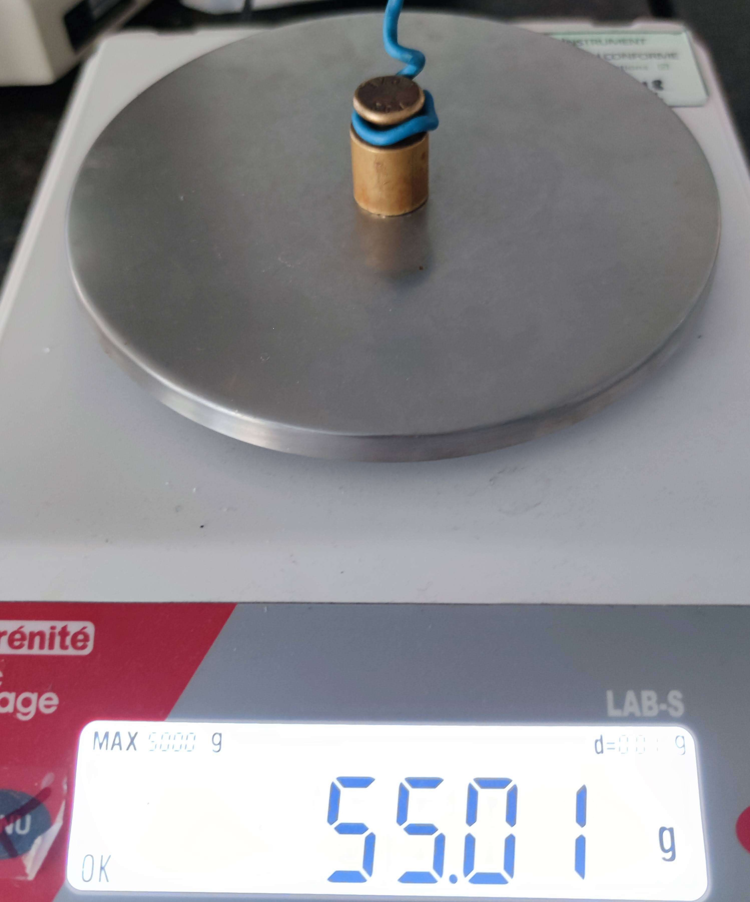
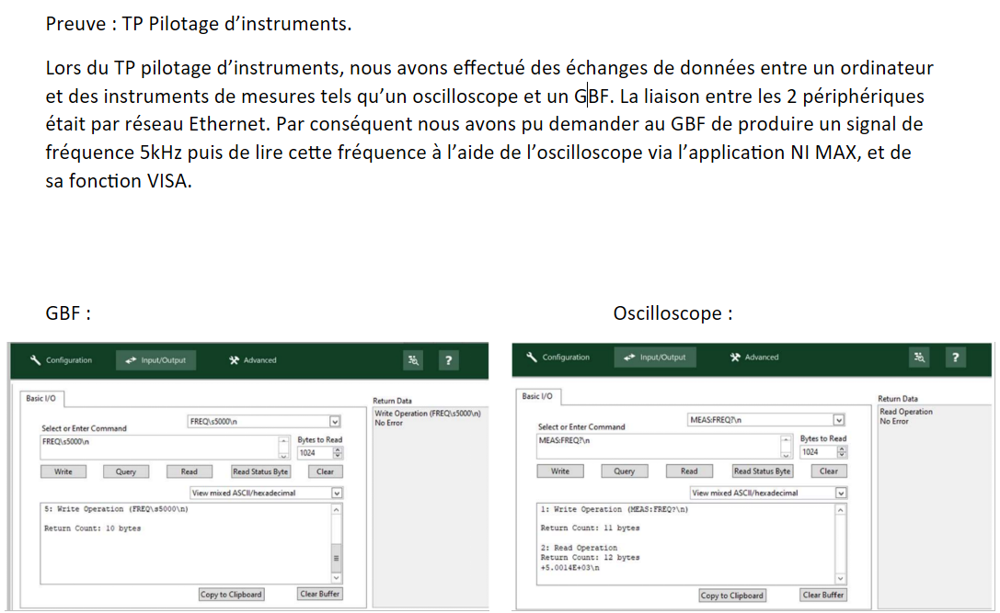
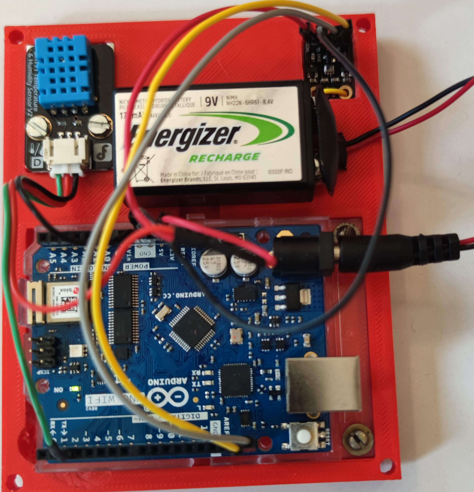

01
Instrumentation & métrologie
Utilisation et étalonnage d'appareils de mesure analogiques et numériques, avec une exigence de précision propre au milieu industriel et de laboratoire.
Étalonnage
Appareils analogiques
Appareils numériques
Précision de mesure

02
Automatisation & contrôle-commande
Pilotage automatisé d'appareils via LabVIEW, pour des tâches d'acquisition de données répétitives ou de contrôle en temps réel.
LabVIEW
Acquisition de données
Pilotage d'appareils
Automatisation de process
03
Traitement de données
Automatisation et analyse de résultats de mesure sous Excel, pour transformer des données brutes en résultats exploitables.
Excel VBA
Automatisation de calculs
Analyse de résultats
Mise en forme de rapports

04
Méthode scientifique
Rigueur expérimentale acquise en travaux pratiques : protocoles de mesure, reproductibilité, rédaction de comptes-rendus techniques.
Protocoles expérimentaux
Reproductibilité
Comptes-rendus techniques
Rigueur analytique